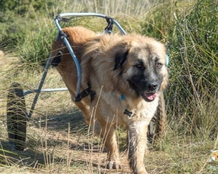

REFUGI ANIMAL


Barcelona
Raça: Mestís
Sexe: Mascle
F.Naixement: 02.05.2024
Tamany: Mitjà
Willy va ser trobat amb tan sols 2 mesos d'edat en una cuneta, atropellat i amb diverses vèrtebres trencades, de manera que va quedar paralític de les potetes del darrere. Va estar un parell de mesos d'acollida, ja que era massa jove per entrar al refugi. Des que viu a Canòpolis rep sessions d'acupuntura, fisioteràpia i altres teràpies naturals. És un gos molt alegre, afectuós i juganer, ple de ganes de viure. Entenem que una adopció en aquestes circumstàncies és difícil, però pots ajudar que Willy tingui la vida digna que es mereix mitjançant l'apadrinament per sufragar-ne les despeses veterinàries i les cures especials. T'agradaria ser el seu padrí diví? També et pots fer soci/a per formar part activa d'aquest projecte que salva vides.